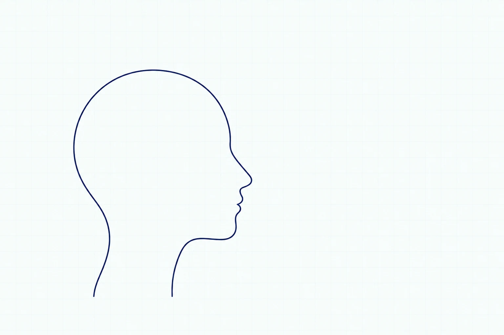

A LITTLE CHECK-IN. A LITTLE MORE CLARITY.
How is your mind,
really doing?
A private mental wellbeing check-in.
Understand your thoughts, emotions and relationships.
Worth understanding.
to yourself.
What’s on your mind?
Take a moment to notice what’s been on your mind.

- Memories
- Overthinking
- Stress
- Feelings
- Focus
- Work
- Relationships
- Decisions
- Hopes
- Rest
YOU, AND THE PEOPLE WHO MATTER
Relationships on
your mind?
Feeling unheard. Growing apart. The same argument.
Start by understanding your own feelings and responses.
WHAT FEELS FAMILIAR?
With a partner, family or friends.
“I wish they understood me.”
NOTICEWhat stays unsaid?
REFLECTWhat do I need them to understand?
Examples to explore. These choices aren’t saved or scored.
A space to understand yourself.
No labels for you or your partner.
Your inner world.
A little easier to see.
See how 36 answers become a picture of your strengths, patterns and next steps.
Patterns across six areas
Choose an area to explore its results.
- Strengths
- Areas to work on
- Patterns to notice
Emotional balance
- Strengths
- Finding calm · Expressing feelings
- Areas to work on
- Regretting a reaction · Making room for feelings
- Patterns to notice
- Pausing before reacting · Difficulty refocusing after an upset
Sample answer · Sometimes
Patterns to notice
REAL LIFE. SIMPLE QUESTIONS.
Let’s start with
what feels familiar.
When your mind keeps going.
Notice the thoughts you return to.
A LITTLE LOOK INSIDE THE TEST
“I keep thinking about past mistakes or problems, even when I know I cannot change what happened.”
Example only. Answer in your test, at your own pace.
JUST A FEW MINUTES FOR YOU
Small steps.
Your own pace.
Save & take a break whenever you need.
- 01
Answer honestly
Choose what feels true in everyday life.
- 02
Notice your patterns
See your responses across six areas.
- 03
Take a reflection with you
Choose one thing you’d like to explore.
YOU DON’T HAVE TO HAVE IT ALL FIGURED OUT
A good place to start?
Right where you are.
36 questions. One moment for you.
A FEW THINGS TO KNOW
Before you begin.
What will my report tell me?
You’ll see your responses across self-awareness, thinking patterns, emotional balance, decisions, relationships and resilience. It is a space to reflect, not a diagnosis or a clinical mental-health score.
Where are my answers saved?
Answers stay in this open page unless you choose Save & take a break or save a report. Saved answers stay in this browser. Use a private device: other people using the same browser could read them.
Which languages are available?
All 36 questions and their answer options are available in 20 languages, including English and Hindi. Your browser language helps select the question language; you can also choose it above. The homepage and full report are currently in English and Hindi.
What is Innerly here for?
Help people understand their current state of mind, identify thinking and behavioural patterns that may contribute to mental stress, and discover practical ways to improve their mental well-being, resilience and overall quality of life.
For adults. A self-reflection questionnaire, not a clinical assessment, diagnosis or treatment.